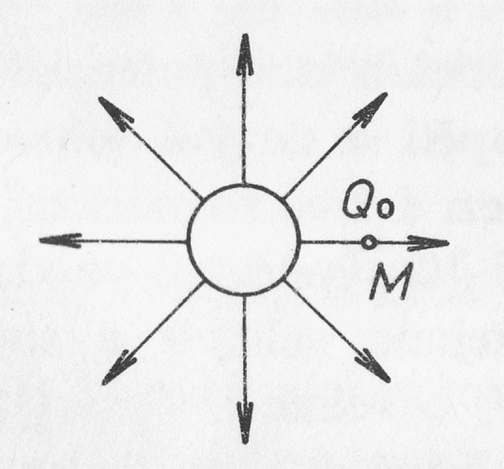

- Přemísťuji náboj Q0 v silovém poli druhého náboje
- Působím silou po dráze a tedy konám práci
- S touto prací souvisí potenciál
- Podíl práce W vykonané při přemístění kladného bodového náboje Q0 z místa nulové intenzity do bodu M a velikosti tohoto náboje.
- Jednotka: Volt - V
Místo nulové intenzity ?
- Hodně daleko – v nekonečnu; technicky obtížně realizovatelné
- V praxi: Zem nebo uzemněný vodič
Ekvipotenciální plocha (hladina potenciálu)
- Množina bodů se stejným potenciálem
- Potenciál uzemněné desky = hladina nulového potenciálu
Elektrické napětí
- Je definováno jako rozdíl potenciálů mezi body A,B
- 𝑈=𝜙A−𝜙B
Alessandro Volta (1745 – 1827)
- Italský fyzik
- Vynálezce elektrického článku, kondenzátoru,…